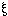
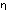

q", "p" und
"q" in der Form
"(p q) . (p) :
: (q)" miteinander verbunden eine
Tautologie ergeben, zeigt, daß q aus p und
p q folgt.
q", "p" und
"q" in der Form
"(p q) . (p) :
: (q)" miteinander verbunden eine
Tautologie ergeben, zeigt, daß q aus p und
p q folgt.
Daß "(x) . fx :: fa" eine Tautologie
ist, daß fa aus (x) . fx folgt, etc. etc.
und die Zuordnung der Wahr- und Falschheit des ganzen Satzes und der Wahrheitskombinationen der Wahrheitsargumente durch Striche auf folgende Weise:
Dies Zeichen würde also z.B. den Satz
p q darstellen. Nun will ich z.B. den
Satz ~(p . ~p) (Gesetz des Widerspruchs) daraufhin
untersuchen, ob er eine Tautologie ist. Die Form
"~" wird in unserer Notation
geschrieben; die Form " . " so:
Daher lautet der Satz ~(p . ~q) so:
Setzen wir hier statt "q" "p" ein und untersuchen die Verbindung der äußersten W und F mit den innersten, so ergibt sich, daß die Wahrheit des ganzen Satzes allen Wahrheitskombinationen seines Argumentes, seine Falschheit keiner der Wahrheitskombinationen zugeordnet ist.